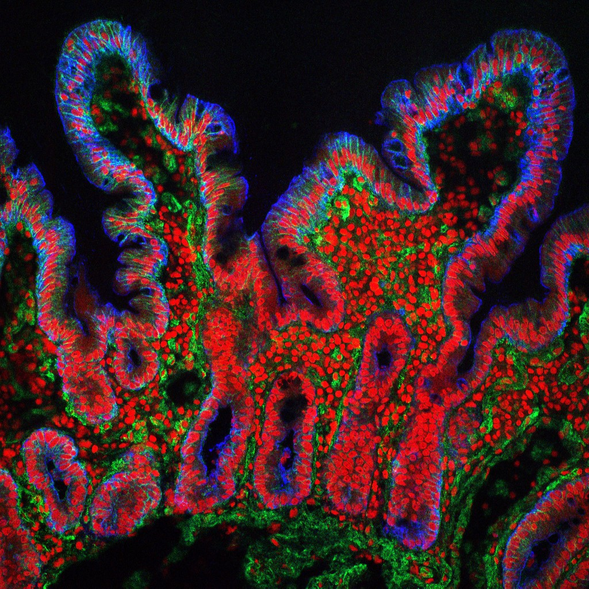

12. Digestive organization and carbohydrate absorption
A meal contains cereal starch, yogurt lactose and fruit-juice sugars. Suppose that a substantial carbohydrate load reaches the small intestine but less sugar appears in the blood than expected. Three explanations already compete: the carbohydrate has not been hydrolyzed, the resulting sugars cannot enter the epithelial cells efficiently, or they enter but do not leave those cells at the same rate. A fourth possibility is that blood carries the absorbed material to the liver, where its identity and metabolic fate change before a systemic sample is taken. These are different failures in different compartments. The route from meal to blood must therefore be reconstructed before a concentration measurement can be interpreted.
The topic spine is official lectures L26 and L27. Complete captions, including the closing anatomy and food-label questions, supply sequence and navigation. A separate bounded source audit inspected five contact sheets containing 90 sampled stills and five repeat native-frame views; that audit is attributed here, not claimed as this author's continuous video viewing. Mechanistic corrections, researched extensions and original synthetic calculations are identified where used. No calculation is a patient test or a measured gut transit model.
12.1 A tube with several distinct exchange routes L26 01:00
Ingestion is taking food into the mouth. Mechanical digestion changes the size and arrangement of food pieces through chewing and mixing. Chemical digestion changes molecules, principally through enzyme-catalyzed hydrolysis, cleavage of a chemical bond with participation of water. Absorption transfers material across the digestive lining toward the body's internal fluids. Elimination, or defecation, removes stool through the anus. Digestion makes many nutrients accessible for energy production, synthesis and repair, but absorption is a separate event. A free glucose molecule, water molecule or mineral ion need not first undergo polymer hydrolysis.
The gastrointestinal tract is the continuous hollow route from mouth through pharynx, esophagus, stomach, small intestine and large intestine to rectum and anus. The lumen is its internal space. Food inside that space has entered the tract without yet crossing its epithelial barrier. The epithelium is the cellular sheet lining that boundary. An enterocyte is an intestinal absorptive epithelial cell. The interstitium is the extracellular tissue space on the body's side of the lining. Blood and lymph occupy additional, separate vessels. The liver, gallbladder and pancreas contribute through ducts or blood; swallowed cereal does not pass through these organs as though they were successive segments of the alimentary tube. The NIDDK digestive-system account supports this organ and route distinction.
For the meal case, define amounts \(n_L,n_E,n_B\) of a selected absorbed sugar in lumen, enterocyte region and receiving blood/interstitial compartment, respectively, in millimoles (mmol). Let \(H\) be its production rate by luminal hydrolysis, \(U\) its apical uptake rate, \(X\) its basolateral exit rate and \(M\) its metabolic removal rate inside enterocytes, all in mmol/min. Here apical names the cell surface facing the gut lumen; basolateral names the basal and lateral surface facing tissue. If the blood compartment also has onward removal \(O\), the deliberately simplified balance is
\[\frac{dn_L}{dt}=H-U,\qquad \frac{dn_E}{dt}=U-X-M,\qquad \frac{dn_B}{dt}=X-O.\tag{12.1}\]Time \(t\) uses minutes. Adding the three balances cancels uptake and exit: they redistribute the selected sugar rather than create it. The sum changes by \(H-M-O\). Hydrolysis creates free sugar molecules from bound residues, so a free-sugar balance need not be conserved during digestion; an appropriately defined carbon or sugar-residue balance can be. Equation (12.1) is original teaching bookkeeping. It omits longitudinal flow, changing volume and detailed metabolism, but already proves why a single blood concentration cannot identify a digestion defect. Concentration additionally requires the sampled volume, and the blood compartment has an onward route.
Mouth and esophagus prepare and propel a bolus L26 03:49
Mastication, chewing, cuts and crushes food. Incisors cut, canines assist tearing, and premolars and molars provide grinding surfaces. The conventional complete adult dentition comprises eight incisors, four canines, eight premolars and twelve molars, including third molars; an individual's erupted or retained count can differ. The tongue manipulates food, supports taste and helps form a bolus, a swallowable cohesive portion. Saliva moistens and lubricates it. The paired parotid, submandibular and sublingual glands are the major named salivary glands; salivary amylase begins starch hydrolysis rather than digesting every food molecule.
Chewing changes accessibility without guaranteeing a particular chemical conversion. In an ideal geometric comparison, dividing one cube into eight equal cubes halves each side and doubles total exposed surface at constant volume. More exposed food surface can increase enzyme access, but actual access depends on the food matrix, water penetration and enzyme contact. The cube construction does not predict a chewing count or a human absorption rate. It distinguishes a physical intervention from the bond specificity considered in section 12.2.
The pharynx participates in the shared upper passage for air and food. Coordinated swallowing directs the bolus toward the esophagus while protecting the airway through several movements, including laryngeal closure and epiglottic inversion. The epiglottis is part of this protective anatomy, not the tube connecting throat to stomach. The muscular esophagus supplies that connection. A sphincter is a functional zone of closure or narrowed passage; relaxation of the lower esophageal sphincter permits entry into the stomach, while its barrier function limits reverse movement.
Peristalsis is a coordinated propulsive contraction pattern. Contraction behind luminal contents, together with an accommodating region ahead, moves the bolus along the tube. Gravity alone cannot explain the muscular sequence. In contrast, segmentation consists of local intestinal contractions that redistribute and mix contents, increasing contact with secretions and the lining without requiring each contraction to cause the same net downstream displacement. Figure 12.2 isolates propulsion in an ideal unrolled tube; it does not impersonate a realistic organ reconstruction or determine how long a meal spends in each organ.
Print equivalent: mouth → pharynx → esophagus → stomach → small intestine → large intestine → rectum/anus. In one propulsive segment the wall contracts behind the bolus and accommodates ahead; both bolus and narrowing progress rightward. Segmentation instead redistributes local contents for mixing. Neither the drawing nor its phase duration gives measured transit time.
The stomach separates an acidic lumen from viable tissue L26 07:14
The stomach stores, mixes and meters ingested material into the duodenum. Its cardia receives the esophagus; the fundus is the upper dome, the body is the large central region, and the distal antrum leads toward the pyloric canal and pyloric sphincter. Rugae are folds of mucosa and submucosa prominent in the less distended stomach. They accommodate changes in filling rather than being small-intestinal villi. Mixing converts a meal into chyme, the partly digested mixture delivered onward. Different meal components can leave at different rates; a bolus is not an indivisible labeled package throughout digestion.
From lumen outward, the wall comprises mucosa, submucosa, muscularis externa and serosa. Mucosa includes epithelium, the supporting connective-tissue lamina propria and a thin muscle layer, the muscularis mucosae. Submucosa contains connective tissue, vessels and nerves. Muscularis externa supplies larger movements; in the stomach its oblique, circular and longitudinal smooth-muscle organization supports churning. Serosa is the external connective-tissue covering with a mesothelial surface. Distinguishing mucosal sublayers from the whole wall prevents an epithelial cell from being mistaken for the entire barrier and its blood supply.
Small surface depressions, gastric pits, lead into glands with specialized cells. Parietal cells secrete hydrochloric acid and intrinsic factor, a protein required for efficient later vitamin B12 absorption. Chief cells secrete pepsinogen, the inactive precursor of the protein-cleaving enzyme pepsin. Acid supports its activation and unfolds many dietary proteins, making peptide bonds more accessible. G cells release gastrin, a hormone that contributes to acid-secretory regulation. Acid is a chemical environment and reactant source, not an enzyme; gastrin is a signal, not the secreted acid itself.
Source correction. Normal gastric mucus comes from surface mucous cells and glandular mucous cells, including mucous neck cells. Intestinal goblet cells are a different epithelial specialization. The source slide attributes gastric mucus to goblet cells, but that does not describe normal gastric histology. In intestinal metaplasia, the stomach lining acquires an intestinal-type differentiated pattern that can include goblet cells. The human gastric mucin study cited below distinguishes normal gastric mucin distribution from goblet-cell MUC2 expression in metaplastic tissue.
The closing pH question requires a compartment and state. pH is minus the base-ten logarithm of hydrogen-ion activity relative to its standard state; a dilute-solution teaching approximation substitutes molar concentration. Gastric luminal contents are strongly acidic in an acid-secretory state, but feeding, buffering, location and time change the value. The OpenStax stomach section gives a teaching range of pH 1.5–3.5, not a fixed value at every surface and moment. A synthetic comparison of pH 2 and pH 7 represents a \(10^5\)-fold hydrogen-ion activity ratio. It does not mean the living gastric cell interior has pH 2.
Protection depends on mucus, bicarbonate near the surface, epithelial junctions, perfusion and repair. These maintain a different local environment at the epithelium from the bulk acidic lumen. The statement that hydrochloric acid “cannot damage” the stomach is therefore too strong. Barrier failure can permit injury; the normal mechanism is active protection, not an intrinsically acid-proof organ. Nor does acid sterilize every ingested material. For the cereal case, the stomach's major carbohydrate role is mixing and delivery in a changing pH environment, while the decisive completion of starch hydrolysis occurs downstream.
Liver blood and bile move through different channels L26 09:45
The liver lies predominantly in the upper right abdomen and is conventionally described by lobes and microscopic organizational units. A classic hepatic lobule is a teaching representation of hepatocyte plates, sinusoids and a central vein. Hepatocytes are the principal metabolic epithelial cells. Sinusoids are specialized blood channels permitting exchange between blood and liver tissue. Kupffer cells are resident macrophages associated with this sinusoidal environment; their name is not “copper cells.” A drawn regular hexagon makes the connections legible without claiming every actual lobule has that exact geometry.
A portal triad contains branches of the hepatic portal vein, hepatic artery and bile duct. Portal venous blood delivers material drained from the gastrointestinal region; arterial blood contributes oxygenated supply. Blood passes through sinusoids toward central veins and ultimately hepatic veins. Bile follows a separate route: hepatocytes secrete into small bile canaliculi, intercellular channels bounded by their membranes, then ductules and larger ducts. In the classic lobule picture the broad directions of blood and bile are opposed. Canaliculi are not little blood capillaries, and absorbed meal sugars do not need to enter bile to reach the liver.
The liver regulates carbohydrate, lipid and amino-acid metabolism, stores glycogen and selected vitamins, synthesizes many plasma proteins and modifies or eliminates numerous endogenous and foreign substances. “Detoxification” names multiple chemical and excretory processes; it does not guarantee that every compound is rendered harmless. Blood filtration includes immune and clearance functions, not the same filtration architecture as a renal glomerulus. The liver contributes many coagulation proteins, while cell-specific production differs among factors; a list of factor names should not be converted into a claim that hepatocytes make all of them. Its carbohydrate role returns in section 12.4.
The gallbladder stores and concentrates liver-produced bile, then releases it through the duct system toward the duodenum. Right and left hepatic ducts join the common hepatic duct; the cystic duct connects the gallbladder, and the downstream common bile duct supplies the intestinal route. Bile salts support lipid digestion and absorption through interfacial and solubilizing actions. They are not hydrolytic enzymes. This difference matters even in a carbohydrate chapter: bile secretion entering the same duodenal lumen does not make glucose a bile-carried particle. OpenStax's accessory-organ account supplies the anatomical reference for these separate secretory and blood routes.
Pancreatic enzymes and bicarbonate are complementary outputs L26 12:58
The pancreas extends from a head near the duodenum through neck and body toward a tail near the spleen. Most of it lies behind the stomach and behind the peritoneal lining of the abdominal cavity, a position called retroperitoneal. Its exocrine part releases products into ducts; its endocrine islets release hormones toward blood. An acinus is a secretory cell cluster organized around a small lumen. Acinar cells provide digestive enzymes, while ductal epithelium provides much of the bicarbonate-rich fluid. The duct system carries juice to the small intestine. Arterial supply has several contributing branches; the splenic artery is part of the supply, not the only vessel serving every pancreatic region.
Pancreatic amylase acts on starch; proteases act on proteins and peptides; lipase acts on lipids; and nucleases act on nucleic acids. Trypsin, chymotrypsin and carboxypeptidases belong to the protease group, with precursor activation an important protection against inappropriate digestion. “Nuclease” names a digestive enzyme; “nucleus” names a cellular compartment. These classes are a substantive part of the anatomical source survey even though protein and lipid processing receive their developed treatment in the next chapter. The endocrine islets include insulin-secreting beta cells and glucagon-secreting alpha cells. Those hormone routes must remain distinct from the pancreatic duct.
Bicarbonate, \(\mathrm{HCO_3^-}\), consumes acid equivalents through the carbonic-acid/carbon-dioxide system. The useful net chemical accounting is \(\mathrm{H^++HCO_3^-\rightarrow CO_2+H_2O}\). One mole of bicarbonate can neutralize one mole of hydrogen-ion equivalents in this ideal net reaction. That establishes stoichiometry, not the resulting pH of buffered chyme. The latter depends on total buffering, mixing, secretion and gas exchange. The source's near-neutral to mildly alkaline duodenal environment is a functional contrast with gastric contents, not a universal pH 7–8 measurement everywhere in the intestine. Neutralization changes enzyme conditions as well as epithelial exposure.
Folds, villi and microvilli operate at different scales L26 15:21
The duodenum, jejunum and ileum are the successive small-intestinal regions. The duodenum receives chyme, bile and pancreatic secretions; the jejunum supports substantial nutrient absorption; the terminal ileum specializes in recovery of bile salts and absorption of intrinsic-factor-associated B12. These are regional specializations, not exclusive compartments in which every other digestive or absorptive activity vanishes. Local mixing and ongoing propulsion expose material repeatedly to the epithelial surface.
Plicae circulares are larger folds involving mucosa and submucosa. Villi are projections of mucosa containing an epithelial covering and connective-tissue core. Microvilli are much smaller projections of the apical membrane of individual enterocytes; their collective appearance is the brush border. Increasing exposed area is useful only when digestive products can reach it and leave through tissue supply routes. A large nominal surface with impaired transport proteins or perfusion does not imply large net absorption. The hierarchy separates a tissue projection from the surface extensions of one cell.
Villus cores contain capillaries and a central lymphatic vessel, the lacteal. Monosaccharides and many amino-acid products reach portal blood; much absorbed long-chain dietary lipid is packaged into particles that enter lymph. These routes are not interchangeable. Peyer patches are aggregated intestinal lymphoid structures especially associated with ileum; they contribute immune surveillance rather than being a sugar conduit. The small- and large-intestine anatomy reference supplies the scale and tissue organization used here.

The large intestine begins at the cecum, with the appendix attached, and continues through ascending, transverse, descending and sigmoid colon to rectum and anal canal. Haustra are the sacculated appearances of the colon; taeniae coli are longitudinal smooth-muscle bands. These are not villi. The colon handles remaining water and electrolytes, microbial substrates and stool formation. The rectum stores stool before coordinated elimination. Water absorption occurs substantially in small intestine as well; defining the colon as “where all water is absorbed” would erase upstream fluid handling.
The gut microbiota are the resident organisms; microbiome often refers to their collective genomes and ecological setting. Bacteria dominate many discussions, but archaea, fungi and viruses also belong to the ecosystem. Microbial metabolism of substrates unavailable to human digestive enzymes contributes products and interacts with host immunity. Individual differences do not establish that a microbial “fingerprint” determines a person's lifestyle or health. Association, mechanistic intervention and demonstrated clinical benefit are different evidence classes. For the meal case, this becomes consequential when fiber or incompletely absorbed carbohydrate continues into the colon.
12.2 Hydrolysis depends on the bond and the enzyme L27 01:15
A monosaccharide is one sugar unit that cannot be hydrolyzed into smaller carbohydrate units. Glucose, galactose and fructose are the principal examples for this absorption account. A disaccharide comprises two units joined by a glycosidic bond, a covalent linkage involving a sugar's anomeric carbon. A polysaccharide is a polymer with many sugar residues; an oligosaccharide is a shorter multi-residue chain. The terminology counts chemical units, not visible food particles. Crushing a cereal flake does not turn its starch into monosaccharides.
Starch contains amylose, predominantly linear glucose chains with α-1,4 linkages, and amylopectin, with α-1,4 chains and α-1,6 branch points. The numerals identify the carbon atoms joined; α describes the relevant stereochemical configuration. Cellulose also contains glucose residues, but its β-1,4 linkages make it a different substrate for human enzymes. Chemical composition alone therefore cannot predict digestibility. Glycogen is a branched glucose-storage polymer in animals. Glucose 6-phosphate is a phosphorylated intracellular metabolic intermediate, not an interchangeable example of the free glucose normally entering through the intestinal transporters described here.
In the cereal–yogurt–juice case, starch requires a sequence of reactions, lactose requires a particular disaccharidase, and already free sugars bypass those hydrolytic requirements. “Total carbohydrate” on a label does not identify one molecular substrate. Nor does the number of carbon atoms tell us whether a substrate binds a particular active site. A useful reaction map needs substrate identity, bond type, enzyme location and final products.
Amylase starts starch digestion; it does not finish every branch L27 04:10
Salivary α-amylase, also called ptyalin, begins hydrolyzing accessible starch during oral processing. Pancreatic α-amylase continues the process after its delivery into the small-intestinal lumen. These are endo-acting enzymes: they cleave eligible internal α-1,4 bonds rather than simply removing one glucose from every end. Their products include maltose, maltotriose and branched α-limit dextrins. Maltose contains two glucose residues, maltotriose three, and limit dextrins retain branch-associated structures that amylase cannot completely remove. The α-1,6 branch bond is not an amylase cleavage site.
Acid exposure limits salivary amylase activity as stomach contents acidify; food buffering and mixing affect that exposure. Pancreatic secretion then supplies substantial luminal starch-digesting capacity under different conditions. Calling pancreatic amylase “stronger” is not a measured comparison of intrinsic catalytic constants. Enzyme amount, substrate accessibility, pH, residence time and product handling all affect the observed digestive outcome. A reaction specificity is a molecular property; completion of digestion is a system-level result. The anatomy chapter's acinar–ductal division explains why enzyme delivery and bicarbonate delivery can be disturbed or regulated separately.
Source correction. The L27 enzyme cartoon shows sucrose becoming glucose and fructose while the accompanying captions call the enzyme salivary amylase and discuss α-1,4 cleavage. The chemically coherent sucrose reaction uses sucrase. It cannot establish that amylase hydrolyzes sucrose. An active site is the enzyme region that binds and catalytically transforms a suitable substrate; it is not generally called a hormone receptor. An enzyme–substrate complex is a transient association along a catalytic pathway. Binding, chemical cleavage and product release are distinct steps, and cartoon spacing supplies no measured reaction time.
The substrate distinction is supported by the human brush-border membrane study of sucrase-isomaltase and maltase-glucoamylase. Luminal α-amylase processes starch, whereas membrane-associated glucosidase activities complete digestion of the resulting fragments and hydrolyze suitable disaccharides. The digestive-enzyme table separately assigns sucrose to sucrase and starch to amylase. Neither source establishes the lecture caption's proposed deficiency-to-ulcer or constipation chain.
Final hydrolysis occurs at the brush border L27 12:25
Disaccharidases hydrolyze disaccharides, and membrane-associated glucosidases also complete digestion of starch-derived fragments. Their catalytic surfaces face the lumen at the brush border. “At the membrane” does not mean that intact lactose must enter cytosol before cleavage. The products are released on the luminal side and then encounter transport proteins. This arrangement places final production near uptake while preserving a biochemical distinction between the two.
| Substrate | Brush-border activity | Products per substrate molecule or cleaved fragment | Consequence for uptake |
|---|---|---|---|
| Lactose | Lactase | One glucose + one galactose | Both use the principal SGLT1 apical route |
| Sucrose | Sucrase | One glucose + one fructose | Two different principal apical routes |
| Maltose | Maltase activities | Two glucose | Starch cleavage has not yet been absorption |
| Maltotriose and short α-glucose chains | Glucosidase activities, including maltase-glucoamylase and sucrase-isomaltase | Free glucose after successive hydrolysis | Chain length decreases before membrane transport |
| Branch-containing limit dextrins | Isomaltase α-1,6 activity with α-1,4 glucosidases | Glucose after branch removal and further cleavage | Amylase alone cannot remove the branch bottleneck |
| Trehalose | Trehalase | Two glucose | Another specific disaccharide reaction |
“Maltase” describes an activity, not proof that every enzyme name in the table corresponds to a unique one-function protein. Sucrase-isomaltase and maltase-glucoamylase contribute overlapping α-glucosidase activities. The table separates the reactions needed to follow the meal without implying an exhaustive molecular inventory. Lactase failure and impaired glucose transport also have different immediate consequences: one retains lactose in the lumen; the other can leave hydrolyzed glucose available but poorly transferred. Their downstream symptoms could overlap, so symptoms alone do not identify the molecular step.
Hydrolysis adds water. For a synthetic starting amount of 10 mmol sucrose, complete cleavage consumes 10 mmol water and produces 10 mmol glucose plus 10 mmol fructose. The number of sugar molecules doubles while carbon remains conserved: ten mmol of twelve-carbon sucrose units contain 120 mmol carbon atoms, as do twenty mmol of six-carbon products. Counting free molecules without accounting for polymer residues would falsely suggest creation of nutrient carbon. The animation in Figure 12.4 follows ten glucose residues through a selected branched fragment for the same reason.
Print equivalent: amylase cleaves an eligible internal α-1,4 link in a branched glucose chain, yielding a short linear fragment and a branched remainder. The α-1,6 bond remains. Brush-border glucosidases, including isomaltase branch activity, complete release of ten glucose residues. Ten residues remain ten; hydrolyzed bonds consume water. Sucrose uses sucrase, not amylase.
12.3 Absorption requires a polarized cell L27 13:50
The meal's free sugars are now in the lumen, but an enterocyte membrane still separates them from tissue. A transporter is a membrane protein that mediates transfer of selected solutes. Its substrate specificity differs from enzyme specificity because its central task is translocation rather than chemical hydrolysis. A symporter couples movement of two or more species in the same direction. Facilitated diffusion is passive transfer through a protein down the relevant electrochemical potential difference. It can saturate, and its direction can reverse when the driving difference reverses. It is not unrestricted simple diffusion through lipid.
The principal apical glucose and galactose pathway is SGLT1, sodium–glucose cotransporter 1. It couples their entry to sodium entry. The principal apical fructose pathway is GLUT5, a facilitative fructose transporter. Basolateral GLUT2 supports sugar exit toward interstitium and blood. Thus “a glucose transporter somewhere in the cell” is an incomplete explanation: the particular sugar and membrane domain determine which step it can perform. The standard diagram concerns a dominant physiological route; it is not a claim that every possible transport pathway, species difference or high-load regulatory response has been eliminated.
Source correction. The bounded L27 visual audit records apical GLUT5 and basolateral GLUT2 on the 17:00 slide and polarity in the 19:00 cartoon, while the captions conflate the two proteins. Figure 12.5 uses the distinct membrane assignments. Patel and colleagues' mouse transport study likewise distinguishes apical fructose uptake from basolateral GLUT2-mediated exit. Its trafficking experiments do not determine the numerical time course of a human meal.
The sodium gradient is an energy store L27 14:27
For a monovalent sodium ion moving from lumen into cell, both a lower intracellular sodium concentration and a cell interior negative relative to lumen can favor entry. The sum of chemical and electrical contributions is its electrochemical potential difference. SGLT1 couples that favorable transfer to sugar movement that may be chemically uphill. The transporter does not need to hydrolyze ATP directly at each uptake event. This is secondary active transport: the immediate energy source is an ion gradient established and maintained by other work.
The basolateral Na+/K+-ATPase is the primary active pump. For a canonical cycle it exports three sodium ions and imports two potassium ions while hydrolyzing one ATP molecule. ATP, adenosine triphosphate, is an intracellular chemical energy donor. Potassium recycling and other ion pathways help maintain electrical and concentration conditions. The pump moves sodium into the tissue-side compartment; it does not directly inject sodium into the gut lumen. Low intracellular sodium can favor entry across the separate apical membrane because that cytosol is shared by both membrane domains.
A useful idealized human SGLT1 stoichiometry is two sodium ions per transported sugar. In Meinild and colleagues' original hSGLT1 study (1998), abstract, human protein expressed in frog oocytes coupled two sodium ions with one sugar. This heterologous expression experiment supports coupling, not a whole-intestine energy audit. Its water-cotransport claims are outside this chapter's calculation. If SGLT1 adds 6 mmol sodium while absorbing 3 mmol glucose and all that added sodium is subsequently removed only by the canonical pump, 2 mmol pump cycles are required. The associated stoichiometric ATP use is 2 mmol. This accounts only for the selected sodium load, not total epithelial metabolism.
A compact research extension makes the energy reasoning explicit. Let \(c_{G,E}/c_{G,L}\) be the ratio of glucose concentrations in enterocyte and lumen. Let \(c_{Na,E}/c_{Na,L}\) be the corresponding sodium ratio. Define \(\Delta\psi=\psi_E-\psi_L\) in volts, temperature \(T\) in kelvin, the gas constant \(R=8.314\) J/(mol·K), and Faraday constant \(F=96485\) C/mol, using rounded teaching constants. Treat solutions as ideal, glucose as neutral, and the transport cycle as two sodium ions plus one glucose entering. The cycle's molar free-energy change is
\[\Delta G=RT\ln\!\left(\frac{c_{G,E}}{c_{G,L}}\right)+2RT\ln\!\left(\frac{c_{Na,E}}{c_{Na,L}}\right)+2F\Delta\psi.\tag{12.2}\]The logarithmic glucose term is positive for uphill glucose accumulation. Sodium's chemical term is negative when intracellular sodium is lower; the electrical term is negative when the interior is negative. A favorable forward cycle requires negative total free-energy change. At the reversible zero-driving boundary, setting \(\Delta G=0\) and solving gives
\[\left(\frac{c_{G,E}}{c_{G,L}}\right)_{\!\mathrm{boundary}}=\left(\frac{c_{Na,L}}{c_{Na,E}}\right)^2\exp\!\left(-\frac{2F\Delta\psi}{RT}\right).\tag{12.3}\]For a synthetic calculation at 310 K, sodium concentrations 140 and 14 mmol/L, and \(\Delta\psi=-0.050\) V, the boundary ratio is approximately 4225. The squared chemical factor is 100; the negative potential provides an additional factor about 42.25. A zero voltage leaves 100; equal sodium concentrations and zero voltage leave one. These limits expose the coupling rather than asserting an actual 4225-fold intestinal accumulation. Other transport, metabolism, nonideal activities and dissipation determine a real cell's state, and forward operation needs a driving margin. The Python program calculates the unrounded value from the stated constants.
Stopping ATP supply does not erase all existing ion gradients instantly. It removes their maintenance while leaks and transport dissipate them. Conversely, adding luminal glucose cannot guarantee unlimited uptake if transporters, driving force or exit are limiting. The “piggyback” image is useful only if it means a coupled protein cycle: a sodium ion is not a miniature vehicle holding glucose and drifting through bare membrane. Insulin is not required as a universal gate for these intestinal pathways. Its receptor-mediated metabolic actions are distinct from SGLT1's sodium coupling.
Print equivalent: lumen → apical SGLT1 → enterocyte for glucose/galactose with 2 Na+ per sugar; lumen → apical GLUT5 → enterocyte for fructose; enterocyte → basolateral GLUT2 → interstitium for sugar exit under a favorable gradient. Basolateral Na+/K+-ATPase exports 3 Na+ and imports 2 K+ per ATP. This ideal topology is separate from measured kinetics.
Saturation and accumulation distinguish different failures
Transport proteins have finite cycling capacity. To expose one consequence, define a synthetic uptake law for a fixed, well-mixed luminal volume \(V_L\) in liters. Let \(c=n_L/V_L\) be free-sugar concentration in mmol/L, \(J_{\max}\) a maximal transfer rate in mmol/min, and \(K\) a positive half-capacity concentration in mmol/L. Use
\[U(c)=J_{\max}\frac{c}{K+c},\qquad \frac{dn_L}{dt}=-U(n_L/V_L),\qquad \frac{dn_B}{dt}=U(n_L/V_L).\tag{12.4}\]This is an original one-step absorption model, not a fit to human SGLT1, GLUT5 or whole-gut meal kinetics. It assumes immediate matching basolateral exit, maintained sodium driving, no new hydrolysis, no metabolism, no volume change and no downstream luminal loss. The identical uptake term with opposite signs conserves \(n_L+n_B\). That conservation is a model requirement, independent of how accurate the rate law is biologically.
At low concentration relative to \(K\), dividing numerator and denominator by \(K\) gives \(U\approx(J_{\max}/K)c\). At high concentration, dividing by \(c\) gives \(U\rightarrow J_{\max}\). Setting \(c=K\) gives half-capacity. With synthetic \(J_{\max}=2\) mmol/min and \(K=10\) mmol/L, concentrations 1, 10 and 100 mmol/L give rates 0.181818, 1 and 1.818182 mmol/min. Raising concentration tenfold from 10 to 100 raises rate only 1.818-fold. This curve shows how a finite-capacity mechanism differs from an indefinitely proportional one; it does not establish a personal meal tolerance.
The assumptions identify the next model failure. If uptake is 1.2 mmol/min but basolateral exit is 0.8 mmol/min and metabolism is zero, (12.1) predicts enterocyte accumulation at 0.4 mmol/min. Over a maintained 5-minute interval it accumulates 2 mmol. The one-step model cannot display that storage because it has eliminated the enterocyte state by assumption. Adding a third compartment is therefore useful when the question concerns exit limitation, but unnecessary when the question is merely the conditional concentration dependence of one entry route.
12.4 Portal delivery is not identical to systemic sugar appearance L27 19:41
Sugar leaving the basolateral surface first reaches interstitial tissue and intestinal blood capillaries. Venous drainage delivers it through the hepatic portal system toward liver sinusoids before hepatic venous blood returns toward the systemic circulation. A portal system connects two capillary-type exchange beds through an intervening venous route. For the meal case, the first bed is intestinal and the next is hepatic. The lacteal belongs to a different route used importantly by packaged dietary lipid. Intact lipid micelles are not glucose carriers across enterocytes or through portal blood.
A systemic concentration depends on uptake, intestinal metabolism, blood flow, hepatic processing and tissue clearance. Even complete luminal hydrolysis cannot make every ingested carbon atom appear promptly as unchanged peripheral glucose. Fructose and galactose carbon can enter glucose, glycogen, lactate, oxidation and other products according to physiological state. The claim that the liver converts every absorbed fructose or galactose molecule into circulating glucose is therefore too strong. Jang and colleagues' mouse isotope-tracing study found fructose-derived glucose and organic acids produced by the small intestine before portal delivery. That is evidence for a prehepatic route, not a universal human conversion fraction or dietary threshold.
Glycogenesis is synthesis of glycogen; glycogenolysis is its breakdown. Gluconeogenesis synthesizes glucose from noncarbohydrate precursors, including lactate, glycerol and glucogenic amino-acid carbon. Lipogenesis synthesizes fatty acids and associated lipid products from metabolic precursors, including carbohydrate-derived carbon. These processes can overlap. Fasting does not wait for a single prolonged-fasting switch before all glucose production starts. Ordinary even-chain fatty-acid carbon does not provide net glucose synthesis in humans; glycerol from triacylglycerol is a different substrate. “Fat becomes glucose” obscures that distinction. The directly opened OpenStax gluconeogenesis section, opening pathway discussion, supports the distinction between three-carbon precursors and acetyl-CoA; no entire pathway diagram is reproduced here.
Insulin and glucagon regulate enzymes, expression and fluxes through signaling. Insulin is not a glucose carrier and does not itself catalyze the glycogen-synthesis reaction. Its actions in liver differ from the classic GLUT4 surface-recruitment mechanism in muscle and adipose tissue. Glucagon contributes to hepatic glucose-output regulation; it is not a glycogen-cleaving enzyme circulating through the blood. The relevant prior correction is supported by De Meyts, The Insulin Receptor and Its Signal Transduction Network, receptor/signaling sections. Those sections identify receptor-mediated signaling, while the current chapter uses that distinction only for metabolic interpretation, not for an individualized glucose-control algorithm.
Fiber separates human hydrolysis from microbial fermentation L27 23:12
Dietary fiber includes carbohydrate material resistant to digestion by human small-intestinal enzymes. Soluble and insoluble describe behavior in water, while fermentability describes microbial metabolism; these classifications are related imperfectly. Some fiber and resistant carbohydrate reach the colon and are fermented to products including short-chain fatty acids, gases and microbial biomass. Thus “not hydrolyzed by human enzymes” does not mean no chemical transformation anywhere in the gut or no potential energy recovery. The exact fate depends on substrate structure and microbial ecology.
This distinction also changes the balance variable. If cereal fiber is tracked as intact dietary polymer, fermentation removes it. If total carbon is tracked across substrate, microbes, gas and absorbed products, disappearance from one molecular category must be accounted for elsewhere. The same conservation principle that prevented hydrolysis from creating carbon prevents “fiber disappearance” from being equated automatically with glucose absorption. NIDDK's digestive-system description confirms microbial processing in large intestine; it does not supply a universal caloric conversion for every labeled fiber.
12.5 Reproduce the conditional absorption calculation
The Chapter 12 Python program implements (12.4) with no third-party dependencies. Inputs are nonnegative initial amount, positive luminal volume and half-capacity concentration, nonnegative maximum rate and nonnegative physical duration. It rejects invalid or nonfinite inputs. It returns luminal and absorbed mmol and prints rate, conservation, hydrolysis, electrochemical and pump-accounting checks. The operation has no external effect beyond console output. The parameters are synthetic and the absorption law has no patient calibration.
For positive amount and rate, separate (12.4), writing \(a=KV_L\) in mmol. Then \(dn_L/dt=-J_{\max}n_L/(a+n_L)\), so \((1+a/n_L)dn_L=-J_{\max}dt\). Integrating from initial amount \(n_0\) to \(n_L(t)\) gives
\[n_0-n_L+a\ln\!\left(\frac{n_0}{n_L}\right)=J_{\max}t.\tag{12.5}\]The left side is zero at \(n_L=n_0\), grows without bound as positive \(n_L\) approaches zero, and decreases strictly with \(n_L\). Thus each finite positive duration has one positive solution below \(n_0\). The program bisects the fraction remaining in logarithmic coordinates, avoiding a negative amount or an explicit time step that removes more material than exists. The zero-amount, zero-rate and zero-duration limits are handled separately. Absorbed amount is computed by subtraction from the same initial amount, enforcing the closed-system balance.
Use \(n_0=20\) mmol, \(V_L=1\) L, \(K=10\) mmol/L and \(J_{\max}=2\) mmol/min for 10 min. Equation (12.5) yields approximately 8.526 mmol remaining and 11.474 mmol absorbed; initial rate is 1.333333 mmol/min and subsequently falls. Multiplying that initial rate by ten would give 13.333333 mmol, an overestimate because it ignores depletion. Doubling \(J_{\max}\) is a capacity comparison; changing volume at fixed amount is a concentration comparison. At otherwise fixed inputs, doubling maximum capacity gives 17.822849 mmol absorbed, while doubling volume alone gives 8.657134 mmol absorbed after the same ten minutes. More dilute substrate lowers the rate in this fixed-capacity model; a larger available volume is not automatically a larger effective absorbing surface. Neither comparison represents a controlled dietary or drug intervention in a person.
The code tests dimensional scaling: doubling both initial amount and volume leaves the initial concentration unchanged but doubles the available inventory, while doubling volume alone lowers concentration and initial rate. It also tests monotonicity in time, the maximum-rate transfer bound and conservation over several orders of magnitude. The staged figures use the same deterministic phase convention and pure-state functions across graphics and labels; they do not integrate this physical-time uptake model. There is consequently no false correspondence between a frame of membrane motion and a minute of simulated absorption.
12.6 Six problems with fully worked solutions
Problem 12.1. Identify the compartment before naming the defect
A tracing proposal sends cereal from stomach to liver through the portal vein, then from liver to small intestine through the bile duct. It proposes checking SGLT1 function from one later peripheral glucose concentration. Repair the route and explain at least three distinct causes of a low downstream signal.
Worked solution
The food route is stomach → duodenum → jejunum → ileum, with unabsorbed residue continuing to large intestine. Pancreatic juice and bile enter the duodenum by ducts; bulk food does not first travel through liver. Starch-derived glucose must be generated in the lumen, cross the apical enterocyte membrane, leave through a basolateral route, and enter intestinal capillary blood before portal delivery to the liver. The blood and bile routes do not form one continuous food-processing tube.
Low hydrolysis reduces \(H\) in (12.1); low apical uptake reduces \(U\); low basolateral exit reduces \(X\) and can increase enterocyte storage. Increased intestinal metabolic use changes \(M\), and hepatic extraction or downstream clearance changes the relationship to peripheral appearance. A concentration measurement adds a volume/flow ambiguity. To distinguish them, a controlled experimental design needs substrate/product measurements and regional transfer information, with appropriate ethical and analytical controls. One late concentration cannot isolate SGLT1 simply because SGLT1 lies somewhere on the route.
Problem 12.2. Solve both gastric closing questions
Compare ideal hydrogen-ion activities at pH 2 and pH 7. Does this mean epithelial cytosol is exposed directly to pH 2? Explain the protective layers and repair the claim that acid cannot damage stomach tissue. Identify the normal mucus-cell attribution and distinguish it from intestinal metaplasia.
Worked solution
From the definition of pH, the relative activities are \(10^{-2}\) and \(10^{-7}\), so their ratio is \(10^5=100000\). The comparison describes the specified solutions, not a membrane's survival threshold or a patient's gastric pH. Luminal pH varies with buffering and secretion. Neither cytosolic pH nor the near-surface microenvironment follows automatically from bulk luminal pH.
Mucus retains a protective environment near the epithelial surface, bicarbonate consumes acid equivalents, junctions limit inappropriate passage, and perfusion and repair support barrier integrity. These mechanisms can fail; acid-associated injury is possible. The defensible statement is that coordinated protection normally limits injury despite an acidic lumen. Normal gastric surface and gland mucus cells, including mucous neck cells, supply gastric mucus. Goblet cells are characteristic of intestinal epithelial differentiation, including intestinal metaplasia when such a pattern appears in stomach. Calling all mucus producers goblet cells erases a meaningful histological distinction.
Problem 12.3. Audit the three food labels L27 23:43
Use these invented analyzed compositions, not real product labels: fruit juice contains 10 mmol sucrose and 5 mmol free fructose; cereal supplies 20 mmol digestible starch glucose-residue equivalents plus unspecified fiber; yogurt supplies 8 mmol lactose. Assume complete hydrolysis of the specified digestible material. Find final glucose, galactose and fructose amounts. Explain why “total sugars” alone would not solve the same problem for real packages, and trace each route.
Worked solution
Juice sucrose yields 10 mmol glucose and 10 mmol fructose through sucrase; the additional free fructose bypasses hydrolysis, giving juice totals of 10 and 15 mmol. Cereal amylase products are completed by brush-border glucosidases, yielding 20 mmol glucose. Yogurt lactose requires lactase and yields 8 mmol glucose plus 8 mmol galactose. Combined amounts are therefore 38 mmol glucose, 8 mmol galactose and 15 mmol fructose, or 61 mmol monosaccharides. Fiber is not silently counted as additional small-intestinal glucose.
Glucose/galactose principally enter apically through SGLT1; fructose through GLUT5; their onward basolateral sugar route is represented by GLUT2, then intestinal capillaries and portal blood. The 20 mmol starch input is a residue-equivalent amount, so it must not be treated as 20 mmol polymer molecules. The specified hydrolysis adds water while conserving the 61 mmol six-carbon residue equivalents. Real labels may report grams of total carbohydrate, sugars, added sugars and fiber without identifying individual sugars, polymer lengths or digestibility. An ingredient list can constrain hypotheses but does not supply missing quantitative speciation. Additional analytical data would be needed for this exact calculation. No health ranking among juice, cereal and yogurt follows from the invented compositions.
Problem 12.4. Repair a transporter drawing and account for ATP
A drawing puts GLUT5 on the basolateral membrane as the glucose exporter, the sodium pump on the apical side, and insulin physically carrying glucose through SGLT1. Repair it. Under the ideal two-sodium/one-glucose and three-sodium/one-ATP assumptions, what selected pump demand follows from absorbing 3 mmol glucose? Does pump inhibition stop every uptake event instantly?
Worked solution
Place SGLT1 at the apical membrane for sodium-coupled glucose/galactose entry; place GLUT5 apically for fructose; and place GLUT2 basolaterally for the simplified sugar-exit route. Put Na+/K+-ATPase basolaterally, exporting sodium to tissue and importing potassium. Insulin acts through a receptor and downstream signaling; it is not a physical glucose–transporter shuttle. Arrows should name compartments rather than saying merely “outside,” because lumen and tissue are both outside cytosol.
Three mmol glucose entering at two sodium ions per sugar adds 6 mmol sodium. Removing that selected load at three sodium ions per ATP requires \(6/3=2\) mmol ATP, with 4 mmol potassium imported by those cycles. This is stoichiometric accounting for one load, not a claim that epithelial total demand is exactly two-thirds ATP per glucose under all circumstances. Other sodium routes and metabolic work remain. Existing gradients persist briefly after maintenance stops and then dissipate according to fluxes; instantaneous complete cessation cannot be inferred from loss of pump activity alone.
Problem 12.5. Predict saturation without inventing a time constant
Use \(J_{\max}=2\) mmol/min, \(K=10\) mmol/L and \(V_L=1\) L. Compare initial rates for luminal amounts 1, 10 and 100 mmol. For an initial 20 mmol, find the 10-minute absorbed amount using (12.5). What changes if basolateral exit is limited to 0.8 mmol/min while actual uptake is maintained at 1.2 mmol/min for five minutes?
Worked solution
The concentrations equal the numerical amounts because volume is one liter. Substitution gives \(2/11=0.181818\), \(20/20=1\) and \(200/110=1.818182\) mmol/min. Capacity remains finite as concentration grows. For depletion from 20 mmol, solve \(20-n_L+10\ln(20/n_L)=20\). Bisection gives about 8.526 mmol remaining and 11.474 mmol absorbed. The two sum to the initial 20 mmol, and absorption is below the capacity bound \(J_{\max}t=20\) mmol. The decreasing concentration also makes it smaller than initial-rate extrapolation, 13.333333 mmol.
The exit-limited scenario needs the enterocyte state. With zero metabolism, its rate of accumulation is \(1.2-0.8=0.4\) mmol/min and its five-minute gain is 2 mmol. At the same time 6 mmol leaves the lumen and only 4 mmol enters the receiving compartment. Those changes conserve amount when the cell's 2 mmol storage is included. The one-step model would incorrectly force all 6 mmol immediately into blood because matched exit was one of its assumptions. Neither comparison identifies a real patient's limiting step without independent measurements.
Problem 12.6. Distinguish carbon fate from hormonal instruction
Evaluate these statements: “The liver makes every absorbed fructose molecule into circulating glucose immediately”; “insulin converts glycogen chemically”; “all fat is a net glucose precursor”; and “fiber supplies no microbial products because humans cannot digest it.” Then explain why a portal sugar input need not equal systemic glucose output over the same interval.
Worked solution
The first statement confuses access to metabolic pathways with a quantitative fate. Fructose carbon can enter several products and may also be processed by intestine before hepatic delivery; amount, timing and state matter. The second confuses a hormone signal with an enzyme reaction: insulin regulates metabolic machinery, while enzyme-catalyzed pathways synthesize or break down glycogen. The third ignores substrate chemistry: glycerol can contribute to gluconeogenesis, whereas ordinary even-chain fatty-acid carbon does not yield net glucose in humans. The fourth ignores microbial enzymes and fermentation, whose products include short-chain fatty acids, gases and biomass.
A regional carbon balance includes incoming portal material, hepatic arterial input, storage change, oxidation, conversion and outgoing products. A systemic glucose measurement includes only one chemical category and one sampling location. Some incoming carbon may be stored or oxidized, and outgoing carbon may have another identity. Insulin and glucagon alter fluxes; they do not invalidate conservation or make every route operate in a single on/off sequence. The missing evidence is a measured regional flux and fate account, not a more emphatic version of the simple cartoon.
12.7 Evidence, scope and reproducibility
Web checks were performed on 4 November 2026. The explanations and mathematical constructions are original. Lecture captions establish topic coverage and timestamp navigation; a separate source audit supplies bounded visual observations. They do not certify every narrated mechanism. The complete L26 captions end at 19:48 and L27 at 24:43, including the stomach questions, fiber and three-product activity. No continuous source video/audio viewing is claimed here.
- Lecture spine: L26, digestive anatomy and function and L27, carbohydrate digestion and absorption, in the official NPTEL course. Corrected or bounded statements include route order, epiglottis/esophagus identity, acid versus enzyme, gastric mucus-cell identity, acinar versus ductal bicarbonate, amylase versus sucrose, transporter specificity/polarity, insulin as signal and gluconeogenic substrate scope. Unsupported specific deficiency-to-ulcer/constipation inference and microbiome determinism are excluded.
- Official organ overview, directly read: NIDDK, Your Digestive System & How it Works, organ, movement, secretory and absorbed-product sections; page lists December 2017 review. It supports the route overview and microbial contribution, not transporter stoichiometry or individual diagnosis.
- Owning textbook pages, directly opened: OpenStax Anatomy and Physiology 2e, 23.4 stomach, 23.5 intestines, 23.6 accessory organs and 23.7 chemical digestion, enzyme table and carbohydrate section. Used selectively for anatomy and reaction identities. Textbook shorthand such as acid being an enzyme, all fiber having no nutritional contribution, or essentially unlimited absorption is not adopted.
- Original human tissue study, access limited: CDX2 expression is progressively decreased in human gastric intestinal metaplasia, dysplasia and cancer, Modern Pathology (2007), DOI 10.1038/modpathol.3800968. Only indexed Results and Table 1 were read for normal gastric mucin distribution versus goblet-cell intestinal metaplasia; direct publisher retrieval failed at its authentication redirect, so no full-paper reading is claimed. The directly opened OpenStax stomach section supports surrounding gland anatomy but also calls gastric surface mucus cells goblet cells in its mucous-neck-cell paragraph. That wording is not adopted and does not corroborate this correction: the normal-gastric versus intestinal-metaplasia distinction rests on the human tissue evidence. No patient-level diagnostic inference is made.
- Original brush-border study, access limited: Interaction between the α-glucosidases, sucrase-isomaltase and maltase-glucoamylase, in human intestinal brush border membranes and its potential impact on disaccharide digestion (2023). Indexed introduction and experimental summary were read; direct PMC opening returned a browser challenge. Supports separation of luminal amylase and brush-border activities, not a claimed full-paper review.
- Original transport research, directly read sections: Patel et al., Transport, metabolism, and endosomal trafficking-dependent regulation of intestinal fructose absorption, FASEB Journal 29, 4046–4058 (2015), DOI 10.1096/fj.15-272195. Abstract, introduction and experimental-design passage read. Mouse knockout and trafficking experiments support the mechanism distinction; no mouse induction magnitudes are presented as human meal kinetics.
- Original coupling experiment, abstract read: Meinild et al., The human Na+–glucose cotransporter is a molecular water pump, Journal of Physiology 508, 15–21 (1998), DOI 10.1111/j.1469-7793.1998.015br.x. Abstract describes human SGLT1 expressed in frog oocytes and two-sodium/one-sugar coupling. Direct PMC opening was challenged; PubMed abstract was readable. No inferred water stoichiometry is used in the calculations.
- Additional metabolic checks: Jang et al., The Small Intestine Converts Dietary Fructose into Glucose and Organic Acids, Cell Metabolism 27, 351–361.e3 (2018), DOI 10.1016/j.cmet.2017.12.016, indexed original abstract and Figure 3 caption; direct opening was incomplete. Mouse isotope tracing supports a prehepatic metabolic fate, without a human quantitative extrapolation. OpenStax Organic Chemistry 29.8, directly opened introductory pathway account, checks net glucose-precursor scope.
- Hormonal signaling reference: De Meyts, The Insulin Receptor and Its Signal Transduction Network, Endotext, 2016 update, receptor/signaling sections documented in the prior scientific dossier. Used for insulin-as-signal correction; no updated clinical treatment survey claimed.
- Observed visual: S. Schuller/Wellcome B0007180, provenance and limits in Figure 12.3 and its JSON. Original route and transport diagrams use illustrative colors and uncalibrated geometry. Mechanism animations use deterministic staged presentation, not observed molecular trajectories; the peristaltic panel is a schematic, not photorealistic gut motion.
- Original code and limits: Python calculations and deterministic animation states and controls. The saturation model assumes a fixed mixed lumen, maintained driving and matched exit. It omits gut transit, secretion, metabolism, spatial gradients, transporter regulation and individual disease. The energy boundary assumes ideal activities and reversible coupling; the ATP ratio counts a selected sodium load. These constructions support reasoning, not medical decisions.
A low peripheral sugar concentration after this meal does not identify one failed digestive step. The reader can now trace starch, lactose and sucrose through specific luminal and brush-border reactions, assign each released sugar its principal apical entry route, follow basolateral exit and portal delivery, and use compartment balances to identify which additional measurements would distinguish limited hydrolysis, uptake, exit and downstream processing. The synthetic saturation curve predicts behavior only under its stated fixed-volume, maintained-gradient and matched-exit assumptions.